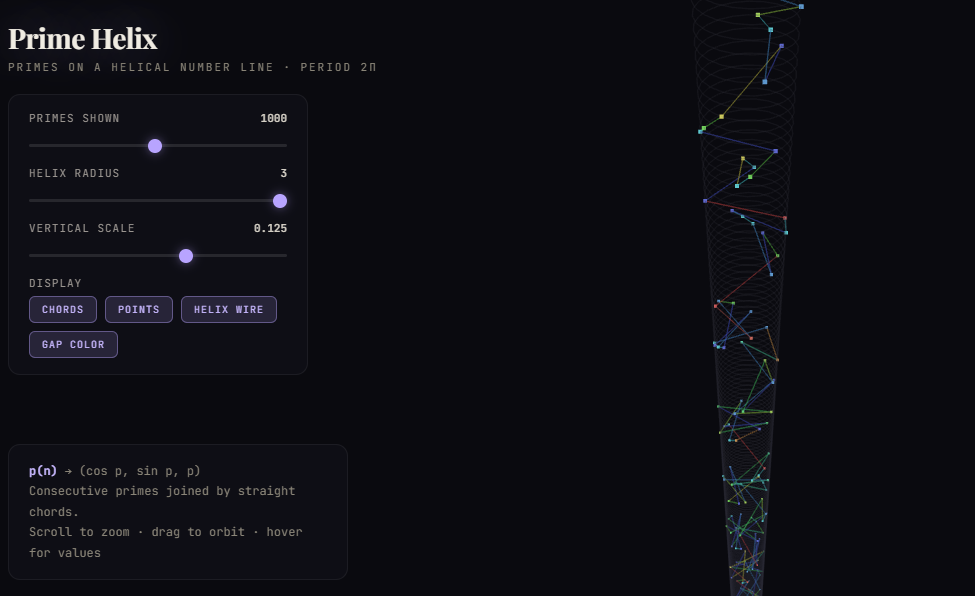
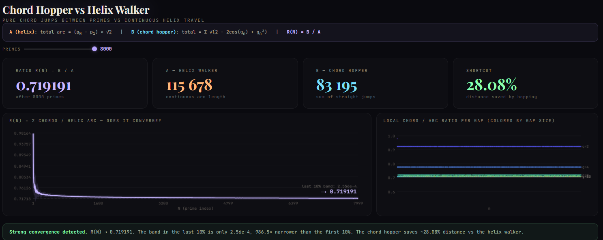
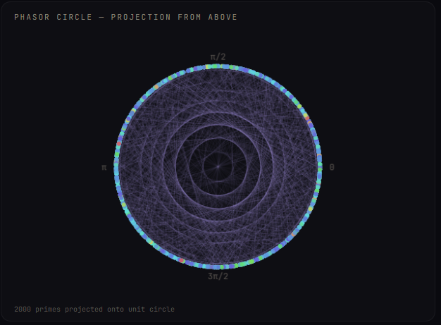
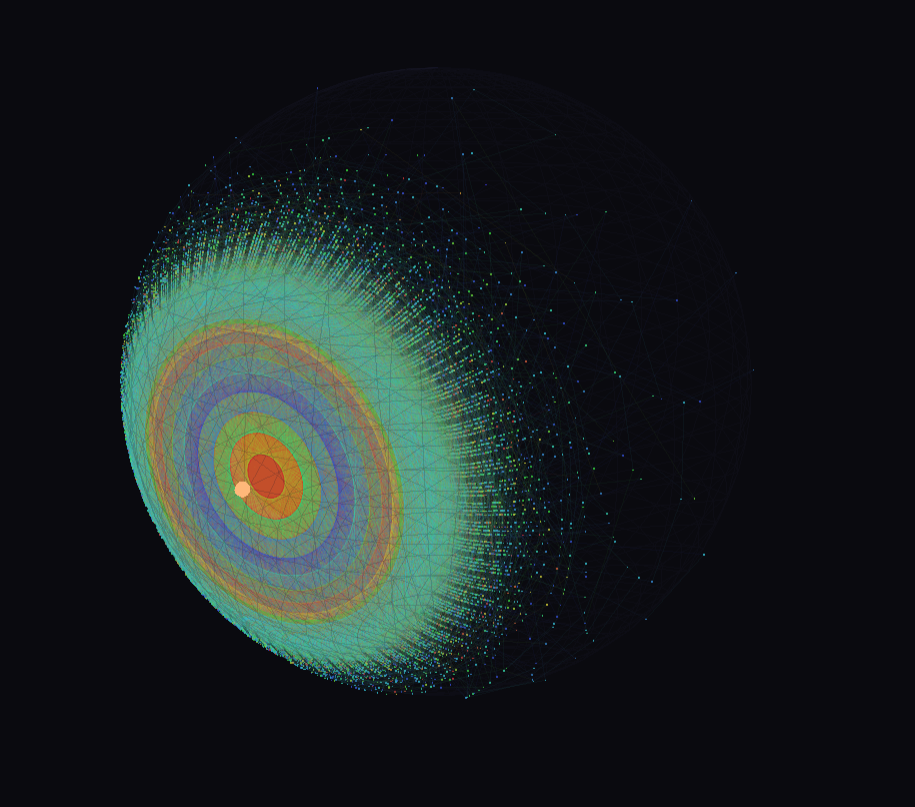

Euler's identity, read as a three-dimensional object, is a helix. This project places the prime numbers on that helix, connects consecutive primes with straight-line chords, and asks a simple kinematic question: if two particles travel at the same speed — one along the helix, the other hopping chord to chord between primes — what is the ratio of their paths?
The answer converges to 1/√2 = cos(45°), determined by the helix geometry alone. The fluctuations around that limit carry information about prime gaps, and appear to reflect — in purely geometric terms — the same phenomena captured by the Riemann zeta function.
Read the paper ↗


